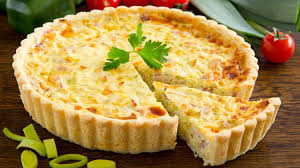
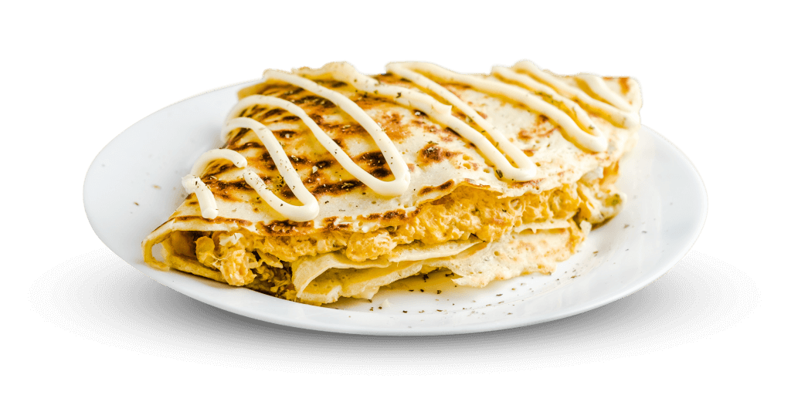
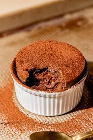
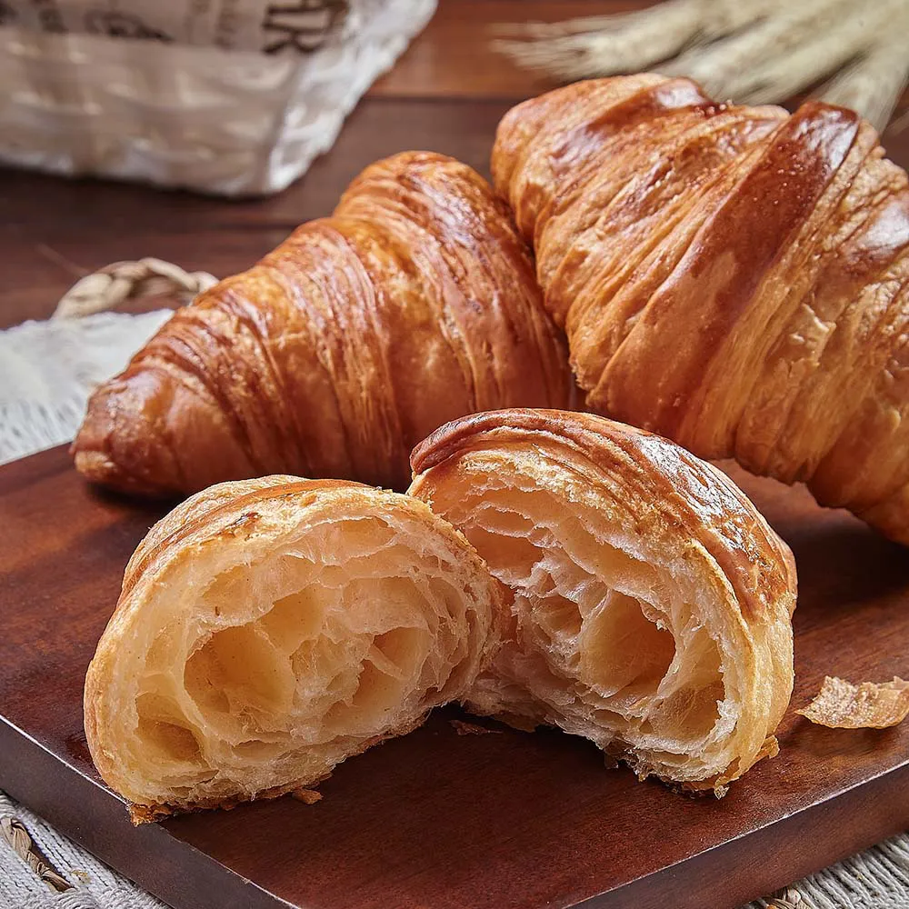

Quiches
Deliciosa torta salgada com uma base crocante e recheios variados, como queijo, presunto e vegetais.
Crepes
Finos e delicados, os crepes podem ser doces ou salgados, acompanhados de frutas, Nutella ou queijos finos.
Soufflé
Prato leve e aerado, perfeito para sobremesas ou como entrada, com sabores que vão do chocolate ao queijo.
Croissant
Ícone da culinária francesa, o croissant é um pão leve, amanteigado e folhado, perfeito para o café da manhã.